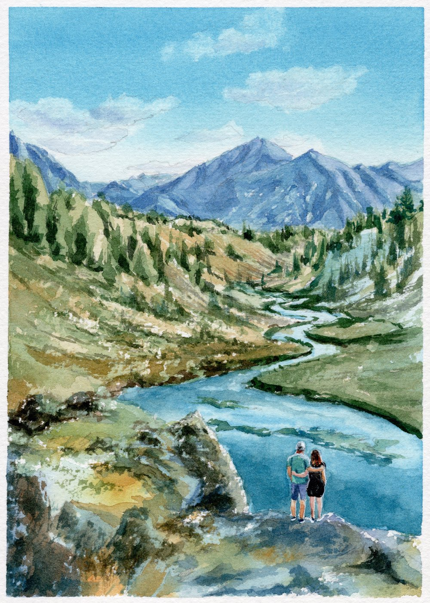
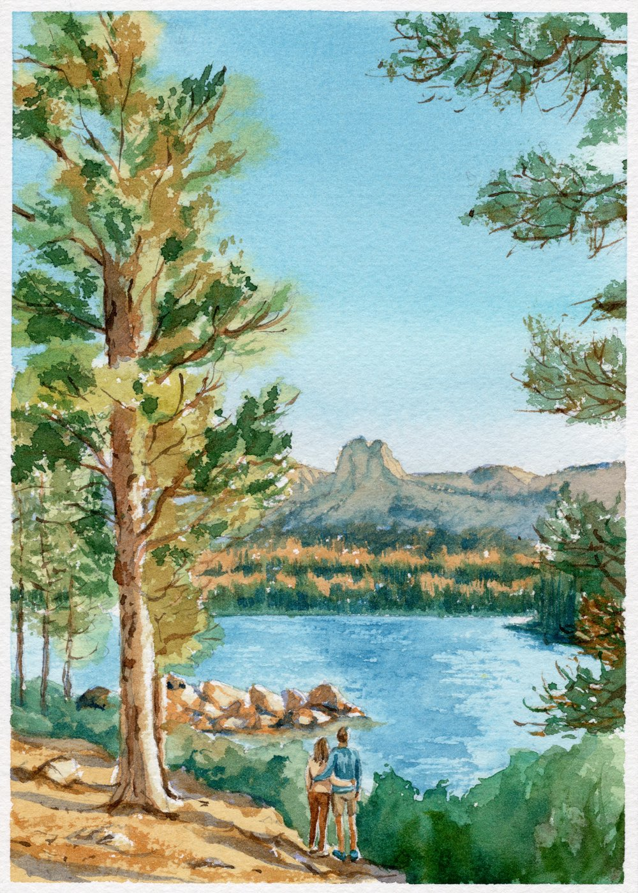
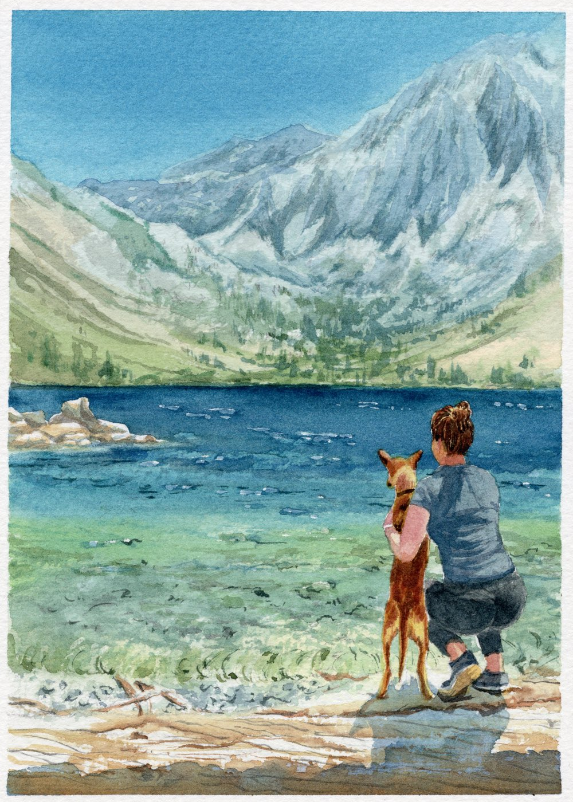
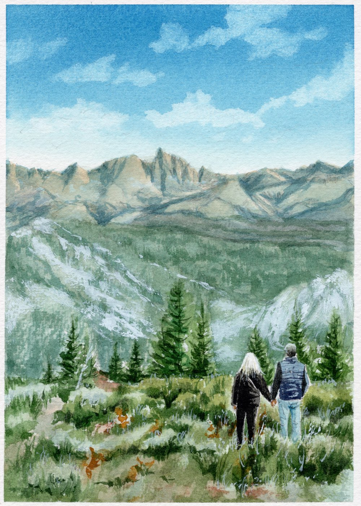
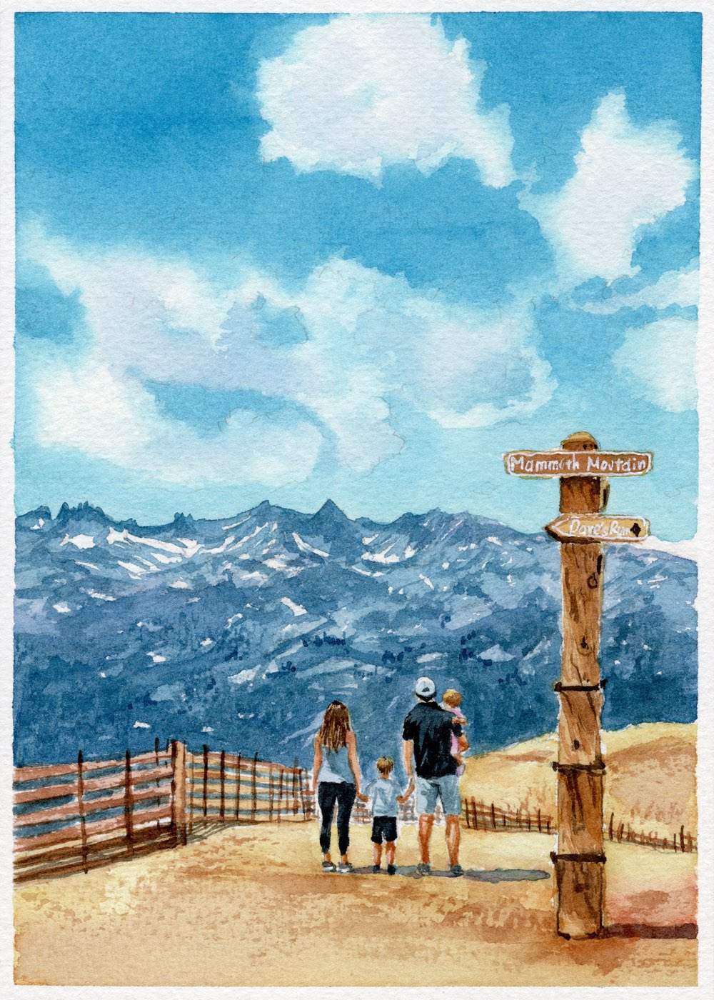
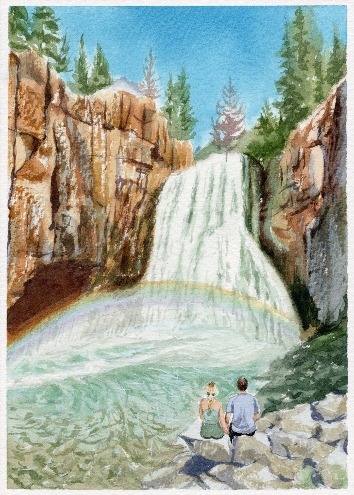

Saturday · Aug 1
Touch down in San Francisco
sea level · the week begins low
- Morning
Gilsons fly into SFO
We'll pick you up! Settle in and shake off the flight.
- Midday
Tunnel Top Park
Golden Gate views and room for the kids to run.
- Evening
Provision & pack
Groceries ordered, bags staged — mountains tomorrow.

Sunday · Aug 2
Over the pass to Mammoth
cresting Tioga Pass · 9,943′
- Morning
Pick up cars, head east
~6 hrs via Yosemite's Tioga Pass — one of the great American drives.
- En route
Scenic stops & stretch breaks
Tenaya Lake beach (toddler heaven), Tuolumne Meadows, Lembert Dome (walk as far as feels good — the full summit is a steep bare-rock finish for the ambitious, kid-free crew), and Mono Lake's otherworldly South Tufa.
- Evening
Arrive at the house
Keys, bunks, and a slow first night at 8,000 feet.

Monday · Aug 3
Up the mountain
Panorama Gondola · 11,053′
- Midday
Kevin & Allie arrive from Reno
Join whatever's happening.
- Afternoon
Summit gondola & adventure park
Ride the Panorama Gondola to 11,000+ feet for a 360° Sierra view — or stay low at the Adventure Center for mini golf, the playground, the climbing wall, ropes course, mountain biking, and other kid-sized fun at the base.
- Evening
Sunset stroll
An easy golden-hour walk to catch the light. Trail on AllTrails · route TBD.
- Evening
Pizza & game night at the house
Back to the house to refuel and play.

Tuesday · Aug 4
Lake day & hot springs
Convict Lake · 7,850′
- Morning
Choose your morning
Pick one — or mix and match at your own pace.
- Via Ferrata — climb a cliff face clipped to steel cables and iron rungs, helmet and harness supplied. Guided routes from easy to airy, with a suspension bridge in the middle. Placeholder — book ahead if you want in.
- Meadow walk in the basin — flat, easy, and gorgeous if you'd rather keep it mellow. Placeholder description.
- Optional hikes — Panorama Dome for 360° Sierra views · Crystal Lake, a moderate climb to an alpine lake below a dramatic crag · Mammoth Rock Trail for sweeping valley views.
- Midday
Boat day at Convict Lake
Private pontoon on a glassy alpine lake ringed by 12,000-foot peaks. Lunch on the water. Life vests for all sizes at the marina.
- Evening
Reinhards arrive
Join whatever's happening.
- Evening
Wild hot springs soak
Steaming pools in an open valley under big desert sky — we'll watch the sunset from the hot tubs.

Wednesday · Aug 5
L + K private vows · choose your adventure
somewhere in the pines · 8,000′
- Morning
We slip away to say our vows
Just the two of us, somewhere in the pines.
- All day
You: pick your pleasure
However you like to spend a mountain day:
- Golf at Sierra Star — California's highest course at 8,000 ft.
- E-bike the Lakes Basin path — a gentle paved cruise past the lakes.
- Wander Mammoth Village — coffee, shops, and people-watching.
- Fishing on Convict or Lake Mary — cast a line on glassy water.
- Easy nature walks around the Lakes Basin — Lake Mary, Lake Mamie, Twin Lakes, or Lake George all have gentle shoreline paths.
- Evening
Mammoth Brewery dinner, all together
L + K join back in once they're back from their private vow adventure.
- Night
Sauna & cold plunge at the Snow House
For the brave — a chance to unwind before the big day.

The main event
Thursday · Aug 6
The wedding
Minaret Vista · 9,265′ · the crest of the week
- Late AM
Family brunch hike
Short, gentle, gorgeous.
- Afternoon
Get ready
At the basecamps — take your time, steam your wedding looks.
- Afternoon
Hair & makeup
The girls get glammed up. Details & timing TBD.
- 6:00 PM
Ceremony at Minaret Vista
Shuttles will pick us all up — time TBD.
- 7:00 PM
Wedding dinner at The Brasserie
Prix fixe menu — TBD.

Friday · Aug 7
Lake lounging & a special dinner
Horseshoe Lake · our last full day
- Midday
Beach day at Horseshoe Lake
Sandy shoreline, shallow entry.
- Evening
A special dinner at the Snow House
Our last night all together — gather at the Snow House.
Saturday · Aug 8
Homeward bound, hearts full
back to sea level
- Morning
Slow breakfast, pack up
- Midday
Everyone heads home
Back over the pass to SFO, down the 395 to Southern California, or out through Reno airport — stop wherever calls to you.